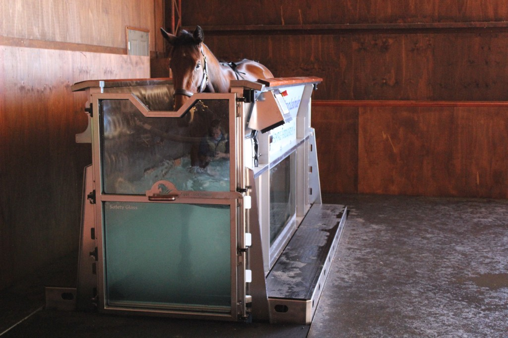

Aqua trainer
This programme is not yet available. We will announce when the aqua trainer is ready.

Water-based conditioning builds fitness and supports recovery without excessive impact. The aqua trainer is an essential part of wellness programming for the sport horse in heavy training.
Used as part of our daily wellness balance, it helps maintain condition and aid recovery between intense work. For more information and access, please reach out.